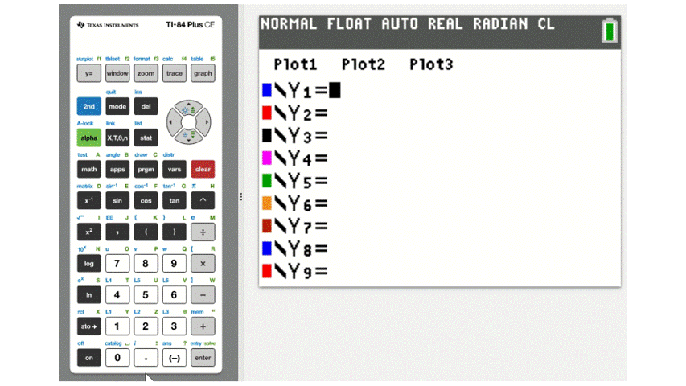

5.5 Graphing Equations with Technology
Introduction
Technology is remarkable in it's ability to simplify tasks that were once tedius and time-consuming. Just consider the effort needed to wash laundry by hand or the time it would take to ride a horse to school.
At the same time, technology can sometimes make things more complicated than they needs to be. For instance, it's much simpler to find shoes that fit well at brick and mortar store where you can try on several different pairs.
In this section we'll investigate using technology to graph and solve equations, and also try to point out when it might be simpler to do it by hand, the old-fashioned way.
Exploring Different Tools for Graphing Equations
With modern tools such as graphing calculators by Texas Instruments and Casio and online platforms like Desmos and GeoGebra, accurate graphs of equations can be drawn simply and quickly.
Since the TI-83/84 series graphing calculators and the online Desmos graphing calculator are very popular, we will take a moment to explain the basics of both.
Though the mechanics might differ slightly from one tool to another, the fundamentals are fairly similar and a wealth of videos can be found online for any calculator or graphing program.
Graphing with a Texas Instruments (TI) Graphing Calculator
The buttons needed to graph an equation on a TI calculator are all located toward the top of the keypad, as shown in this image.

To graph an equation with a TI graphing calculator, start by pressing the Y= button in the top left to open the equation editor. Since the equation editor already displays \(y=\), we only need to enter the right side of the equation.
For example, to enter the equation \(y=3x+1\) we would only need to type \(3x+1\). To enter the variable \(x\), use the X,T,\(\theta\),n button, as demonstrated below.

Once an equation has been entered, pressing the GRAPH button will bring up the coordinate grid. However, the calculator doesn't automatically give you the best view of the graph of the equation.
A good starting point, which may be all you need in some instances, is found by pressing ZOOM and choosing 6:ZStandard which will change the view to the standard 10x10 window.
Additional refinements can be made by using the other zoom tools or by changing the axis manually, just like if you were drawing a graph by hand and had to decide what numbers are displayed on each axis. That is done by pressing the WINDOW button, which gives options for adjusting the minimum and maximum values of each axis and the spacing of the tick marks. After changing the window settings, pressing GRAPH will bring up the equation in the new viewing window. This is demonstrated below.

Let's summarize those steps.
- Press Y= and enter your equation.
- Press GRAPH to view the coordinate grid.
- Press ZOOM and choose 6:ZStandard to display the standard window.
- If needed, press WINDOW to adjust the viewing window or use other zoom commands.
- For more features, see this video from Texas Instruments, consult your calculator's manual, or search the web for additional videos.
Graphing with Desmos
The Desmos online graphing calculator is a very user friendly tool for graphing equations. After navigating to www.desmos.com/calculator, simply type the equation into the entry panel and the graph will automatically appear.

To adjust the window settings in Desmos, there are + and - buttons on the right side of the screen. You can also click and drag move around the graph and pinch/scroll to zoom. The wrench button in the upper right corner allows manual entry for the values for the upper and lower bounds on each axis.

One particularly nice feature of Desmos is that it can graph equations even when they are not in the \(y=\) format. Test this out for yourself by typing \(x^2+y^3=5x+4\) into the active Desmos window below.
- Go to www.desmos.com/calculator and enter your equation.
- Click and drag to adjust your window and pinch/scroll to zoom.
- For more refined adjustments, select the wrench button in the upper right corner.
- To learn more, watch their Introduction Video or browse through the Desmos User Guide.
Identifying Features of a Graph
Now that we can graph equations, let's move on to finding points of interest.
On a TI graphing calculator, all of the commands we need are in the CALC menu which is accessed by pressing 2ND and then TRACE.
To find a \(y\)-intercept choose option 1:value. This command will allow you to evaluate the equation for any value of \(x\) that is graphed on the screen. Since the \(y\)-intercept occurs when \(x=0\), entering \(0\) will highlight the coordinates of that point.
To locate an \(x\)-intercept choose option 2:zero. The on-screen instructions will ask you to use the left and right arrow keys to move the coursor to the left and right of the intercept and to make a guess that is in between those two. This is illustrated below.

The process for finding a vertex has a similar set of instructions where you set left and right bounds and make an in between guess. The difference being we must choose either 3:minimum or 4:maximum depending on the direction of the parabola.
The process is much simpler in Desmos since it automatically finds intercepts and vertices when you click on the graph. You can test this in the Desmos window below. Click on the \(x\)-intercept and the coordinates \((-0.333, 0)\) will display. When you click on the \(y\)-intercept \((0, 1)\) will display.
We'll summarize those steps below.
- Graph the equation using your chosen method.
- Adjust your viewing window so you can see the feature you want to locate.
- If using a TI calculator, press 2ND and then TRACE to enter the CALC menu and select the feature you wish to find.
- If using Desmos, click the graph to see the coordinates.
Solving Equations Graphically
Since a graph represents all of the \(x,y\) pairs that make an equation true, finding a solution to an equation often involves nothing more than locating the appropriate point on the graph of the equation.
Let's start with a simple example and solve \(x+3=4\). You can probably tell, either from mental math or by subtracting \(3\) from both sides, that the answer is \(x=1\), but how could that be done graphically?
All that needs to be done is to examine the graph of the line \(y=x+3\) and locate the point on that line that has a \(y\)-coordinate of \(4\). The best way to find that point is to graph both \(y=x+3\) and \(y=4\). The \(x\)-coordinate of the point where these two lines cross is the solution to the equation.
Type both of those into the active Desmos window below and verify that they cross when \(x=1\).
We can expand this simple example to encompass more complicated equations. The general process is to graph both sides of the equation separately and find the point where they cross.
In the case of \(3x+2=6-x\), we would graph \(y=3x+2\) and \(y=6-x\). The \(x\)-coordinate of the point where these two lines cross is the solution to the equation. Problems with two equations, like this, are sometimes called systems of equations.
On a TI calculator the command for finding the intersection of two graphs is in the CALC menu and is listed as 5:intersect. The figure below demonstates solving \(3x+2=6-x\) by finding the intersection of \(y=3x+2\) and \(y=6-x\).

The solution is \(x=1\), at which point both sides of the equation would equal \(5\). Sometimes when solving a system both the \(x\) and \(y\) values are asked for.
We can also use a graph to solve equations that are set equal to zero. For instance, you'll recall that we often solved quadratic equations of the form \(ax^2+bx+c=0\), either by factoring or by the quadratic formula.
Graphically, this is equivalent to finding the \(x\)-intercepts of \(y=ax^2+bx+c\), since all \(x\)-intercepts have a \(y\)-coordinate of \(0\)!
To demonstate this, let's solve \(x^2+8x+15=0\), which can be done with factoring.
\begin{align} && x^2 + 8x + 15 &= 0 &&&& \quad \small \color{#5fa2ce} {\text{Original equation}}\\ && (x+5)(x+3) &= 0 &&&& \quad \small \color{#5fa2ce} {\text{Factored equation}}\\ x+5 = 0 && \text{ or } && x+3 &= 0 && \quad \small \color{#5fa2ce} {\text{Apply Zero-Product Property}}\\ x = -5 && \text{ or } && x &= -3 && \quad \small \color{#5fa2ce} {\text{Solve each equation}} \end{align}If you type \(y=x^2+8x+15\) into the active Desmos window below and find the \(x\)-intercepts, you will see they are at \((-5,0)\) and \((-3,0)\).
In this case, factoring is likely much quicker than graphing the equation. This is true more often than you might expect.
Solving by graphing is often slower than other techniques, especially if the points we need to find aren't immediately visiable and/or the viewing window needs to be adjusted.
Conclusion
As we've seen, graphical methods of solving are powerful, particularly for complex equations that are challenging to solve algebraically.
We've only scratched the surface of what is possible with graphing and it's connections to solving equations. A surprising number of situations in real life applications lead to equations that cannot be solved with inverse algebraic operations, and entire fields of math have been created to solve them using graphical and numerical methods.
In the future, whenever you encounter an equation, remember that it has a graphical representation as well as the algebraic representation. Often properties and features observed from the graph can help solve equations and their applications.